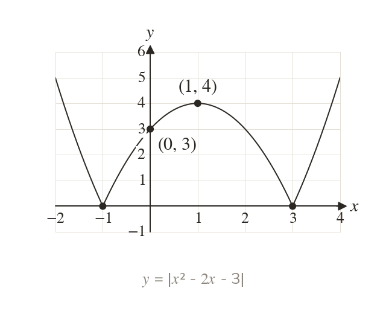
Reflect the part below
keeps every point on or above the x-axis and reflects every point below it in the x-axis. So it is never below the x-axis.
drew the modulus of a straight line; today the modulus goes round any function, as or round inside it, as These sketches are how modulus equations and inequalities with curves are solved in
Work down the page at your own pace. Write every answer in your book first, then click to check it.
Read each card, then follow the worked examples one step at a time.

keeps every point on or above the x-axis and reflects every point below it in the x-axis. So it is never below the x-axis.
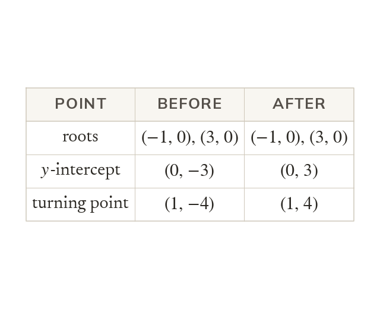
The roots stay where they are. A point below the x-axis, such as a negative y-intercept or a minimum, changes the sign of its y-coordinate.
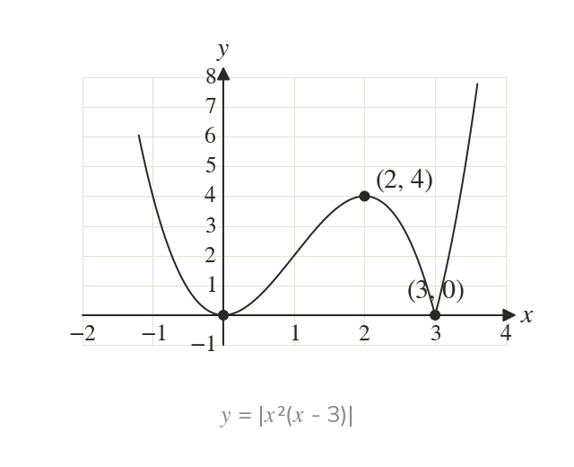
is below the x-axis for every except so the whole of that part is reflected up. becomes and the graph touches the x-axis at
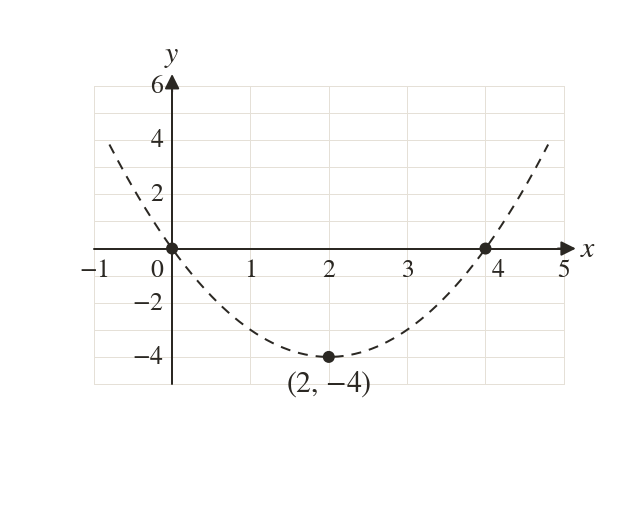
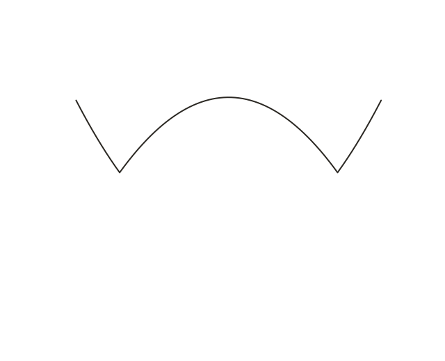
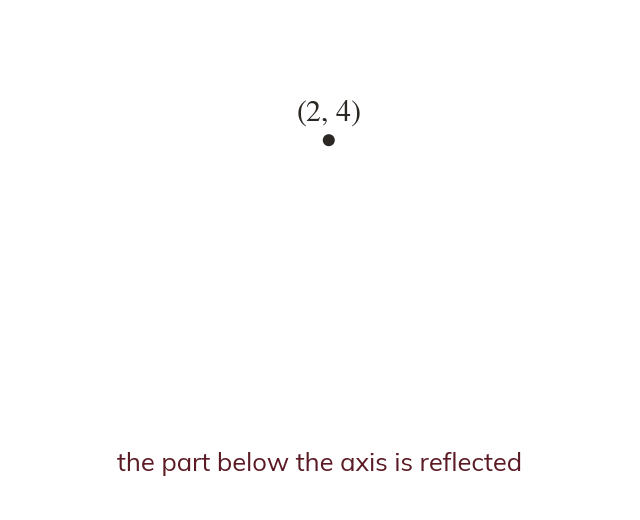
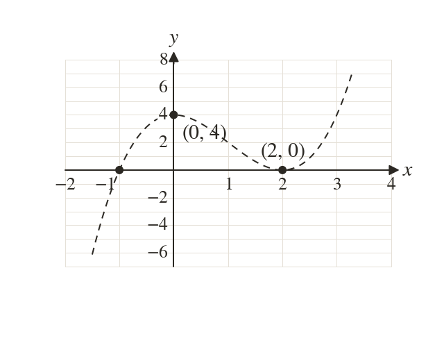
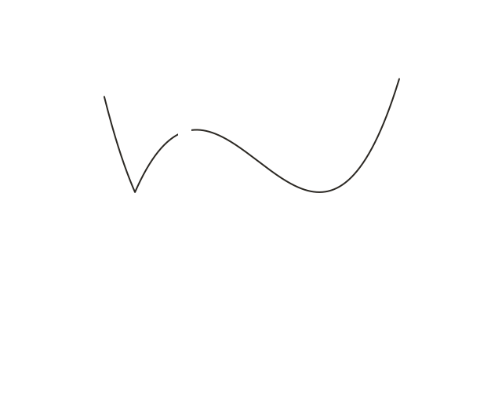
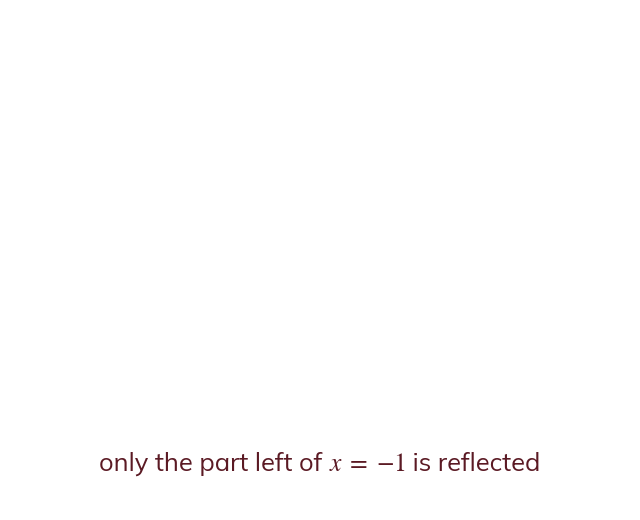
Pick an answer. If it's wrong, the feedback tells you which mistake it was.
Write the blanks in your book first, then tap each one to check.
Read each card, then follow the worked examples one step at a time.
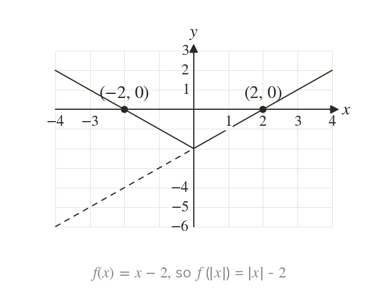
For keep the part of where
Its reflection in the y-axis replaces the part where
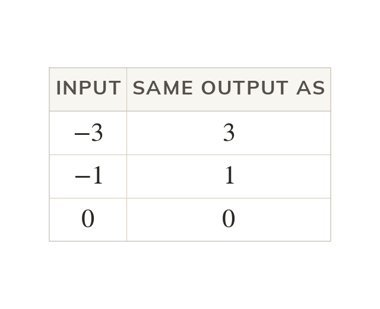
The output at is the same as the output at
Every point b) with has a twin b)
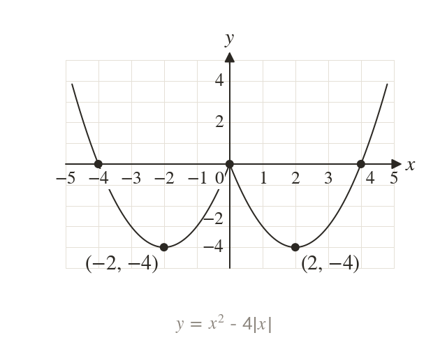
for is a W shape with minima and Unlike it can be below the x-axis.
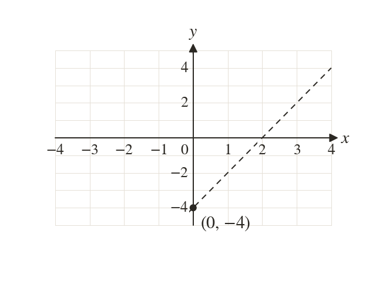
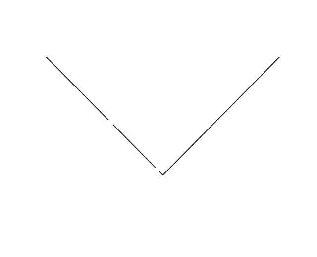
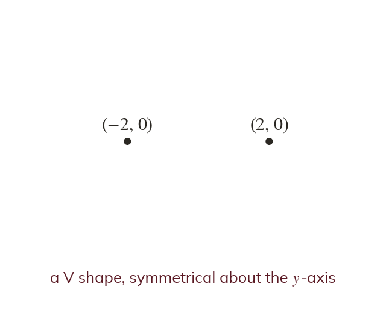
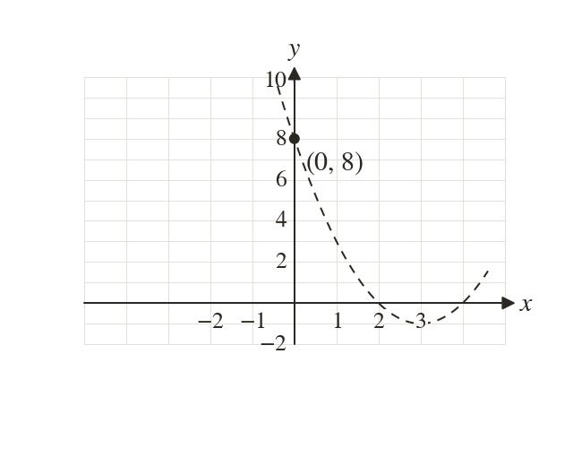
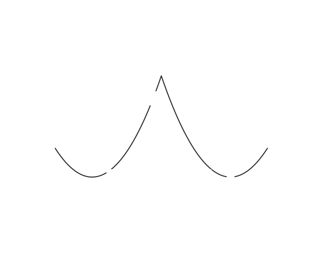
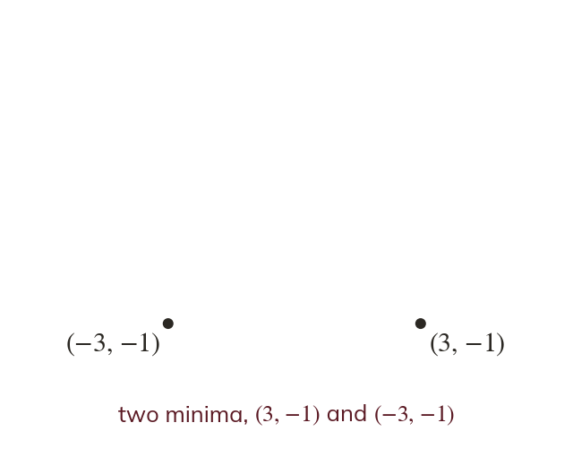
Pick an answer. If it's wrong, the feedback tells you which mistake it was.
Write the blanks in your book first, then tap each one to check.
Finished? Next lesson: 13.P2.6 Combining Transformations.
For each skill, tap the one that is true for you today. Your Revise pages start with anything you mark Not yet.
Your ratings are saved on this device only.
Log in, then search for a code to practise that skill.